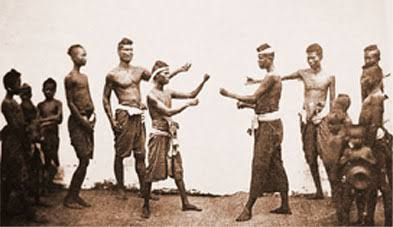
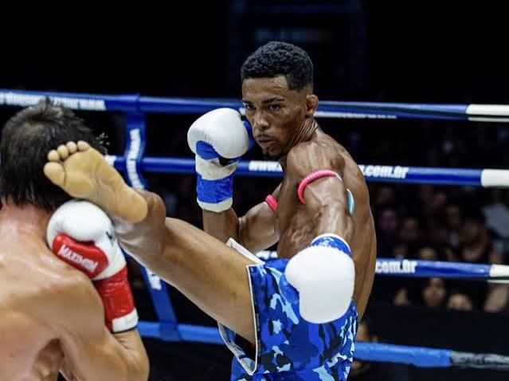

Origem

O Muay Thai surgiu na Tailândia, há muitos séculos, como uma técnica de combate utilizada pelos guerreiros para defesa e proteção do território. Com o tempo, evoluiu para um esporte de luta conhecido como “Arte das Oito Armas”, pois utiliza punhos, cotovelos, joelhos e canelas. Atualmente, é praticado mundialmente e representa uma importante tradição cultural tailandesa.
Modernização

Um dos acontecimentos mais importantes da história do Muay Thai foi sua modernização no século XX. Nesse período, a luta passou a utilizar luvas de boxe, ringues, rounds cronometrados e regras mais organizadas. Essas mudanças tornaram as competições mais padronizadas e ajudaram o Muay Thai a se espalhar pelo mundo, transformando uma tradição tailandesa em um esporte internacional.